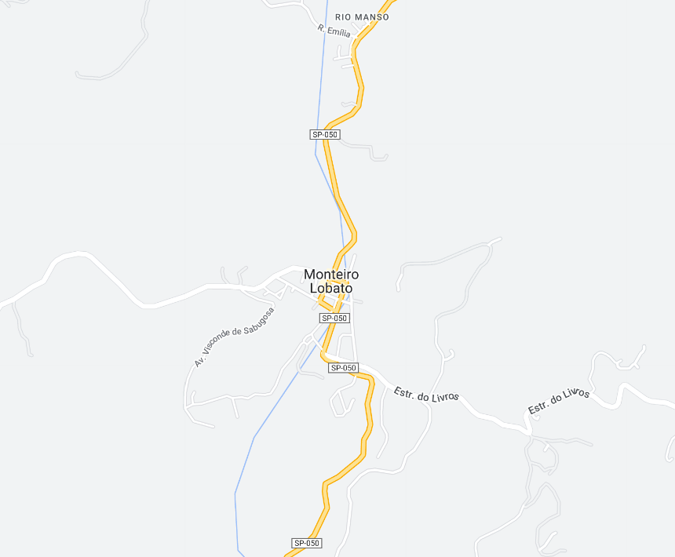

Monteiro Lobato - Geodex

Município de Monteiro Lobato
-
Populacão: 4.739 pessoas
-
Área: 332,742km²
-
Fundação: 18 de Dezembro de 1961
-
Distância da Capital: 126km
Monteiro Lobato é uma cidade localizada no estado de São Paulo, Brasil. Ela é conhecida por ser a terra natal do escritor brasileiro Monteiro Lobato, famoso por seus livros infantis, como "Sítio do Picapau Amarelo". A cidade é cercada por belas paisagens naturais, com montanhas e cachoeiras, e oferece diversas opções de ecoturismo. Além disso, conta com o Parque Municipal "Monteiro Lobato", que é uma atração turística importante e homenageia o ilustre escritor. A cidade é um destino popular para os fãs de literatura e para aqueles que desejam desfrutar da tranquilidade e beleza da natureza.